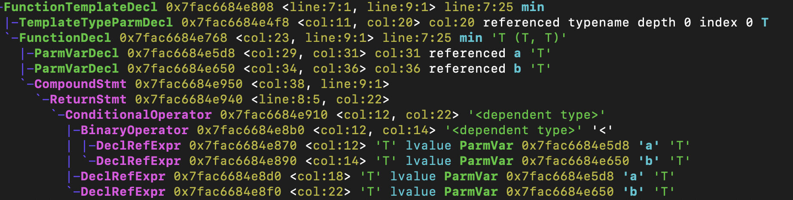
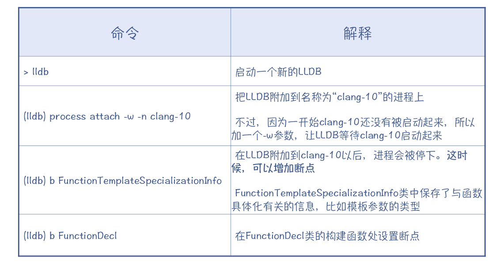

- 00 学习指南 如何学习这门编译原理实战课？.md.html
- 00 开篇词 在真实世界的编译器中游历.md.html
- 01 编译的全过程都悄悄做了哪些事情？.md.html
- 02 词法分析：用两种方式构造有限自动机.md.html
- 03 语法分析：两个基本功和两种算法思路.md.html
- 04 语义分析：让程序符合语义规则.md.html
- 05 运行时机制：程序如何运行，你有发言权.md.html
- 06 中间代码：不是只有一副面孔.md.html
- 07 代码优化：跟编译器做朋友，让你的代码飞起来.md.html
- 08 代码生成：如何实现机器相关的优化？.md.html
- 09 Java编译器（一）：手写的编译器有什么优势？.md.html
- 10 Java编译器（二）：语法分析之后，还要做些什么？.md.html
- 11 Java编译器（三）：属性分析和数据流分析.md.html
- 12 Java编译器（四）：去除语法糖和生成字节码.md.html
- 13 Java JIT编译器（一）：动手修改Graal编译器.md.html
- 14 Java JIT编译器（二）：Sea of Nodes为何如此强大？.md.html
- 15 Java JIT编译器（三）：探究内联和逃逸分析的算法原理.md.html
- 16 Java JIT编译器（四）：Graal的后端是如何工作的？.md.html
- 17 Python编译器（一）：如何用工具生成编译器？.md.html
- 18 Python编译器（二）：从AST到字节码.md.html
- 19 Python编译器（三）：运行时机制.md.html
- 20 JavaScript编译器（一）：V8的解析和编译过程.md.html
- 21 JavaScript编译器（二）：V8的解释器和优化编译器.md.html
- 22 Julia编译器（一）：如何让动态语言性能很高？.md.html
- 23 Julia编译器（二）：如何利用LLVM的优化和后端功能？.md.html
- 24 Go语言编译器：把它当作教科书吧.md.html
- 25 MySQL编译器（一）：解析一条SQL语句的执行过程.md.html
- 26 MySQL编译器（二）：编译技术如何帮你提升数据库性能？.md.html
- 27 课前导读：学习现代语言设计的正确姿势.md.html
- 28 前端总结：语言设计也有人机工程学.md.html
- 29 中端总结：不遗余力地进行代码优化.md.html
- 30 后端总结：充分发挥硬件的能力.md.html
- 31 运行时（一）：从0到语言级的虚拟化.md.html
- 32 运行时（二）：垃圾收集与语言的特性有关吗？.md.html
- 33 并发中的编译技术（一）：如何从语言层面支持线程？.md.html
- 34 并发中的编译技术（二）：如何从语言层面支持协程？.md.html
- 35 并发中的编译技术（三）：Erlang语言厉害在哪里？.md.html
- 36 高级特性（一）：揭秘元编程的实现机制.md.html
- 37 高级特性（二）：揭秘泛型编程的实现机制.md.html
- 38 综合实现（一）：如何实现面向对象编程？.md.html
- 39 综合实现（二）：如何实现函数式编程？.md.html
- 40 成果检验：方舟编译器的优势在哪里？.md.html
- 不定期加餐1 远程办公，需要你我具备什么样的素质？.md.html
- 不定期加餐2 学习技术的过程，其实是训练心理素质的过程.md.html
- 不定期加餐3 这几年，打动我的两本好书.md.html
- 不定期加餐4 从身边的牛人身上，我学到的一些优秀品质.md.html
- 不定期加餐5 借助实例，探究C++编译器的内部机制.md.html
- 划重点 7种编译器的核心概念与算法.md.html
- 期末答疑与总结 再次审视学习编译原理的作用.md.html
- 热点问题答疑 如何吃透7种真实的编译器？.md.html
- 用户故事 易昊：程序员不止有Bug和加班，还有诗和远方.md.html
- 知识地图 一起来复习编译技术核心概念与算法.md.html
- 结束语 实战是唯一标准！.md.html
- 捐赠
不定期加餐5 借助实例，探究C++编译器的内部机制
你好，我是宫文学。欢迎来到编译原理实战课的加餐环节，今天我们来探讨一下C++的编译器。
在前面的课程中，我们已经一起解析了很多语言的编译器了，但一直没有讨论C和C++的编译器。并不是因为它们不重要，而是因为C语言家族的编译器实现起来要更复杂一些，阅读代码的难度也更高一些，会对初学者造成比较大的挑战。
不过，没有解析C和C++语言的特性及其编译器的实现，其实在我心里也多多少少有点遗憾，因为C和C++是很经典的语言。至今为止，我们仍然有一些编程任务是很难用其他语言来代替的，比如，针对响应时间和内存访问量，需要做精确控制的高性能的服务端程序，以及一些系统级的编程任务，等等。
C和C++有很多个编译器，今天我们要研究的是Clang编译器。其实它只是前端编译器，而后端用的是LLVM。之所以选择Clang，是因为它的模块划分更清晰，更便于理解，并且还可以跟课程里介绍过的LLVM后端工具串联起来学习。
另外，因为C++语言的特性比较多，编译器实现起来也比较复杂一些，下手阅读编译器的源代码会让人觉得有点挑战。所以今天这一讲，我的主要目的，就是给你展示如何借助调试工具，深入到Clang的内部，去理解它的运行机制。
我们会具体探究哪个特性呢？我选择了C++的模板技术。这个技术是很多人学习C++时感觉有困难的一个技术点。通过探究它在编译器中的实现过程，你不仅会加深了解编译器是如何支持元编程的，也能够加深对C++模板技术本身的了解。
那么下面，我们就先来认识一下Clang这个前端。
认识Clang
Clang是LLVM的一个子项目，它是C、C++和Objective-C的前端。在llvm.org的官方网站上，你可以下载Clang+LLVM的源代码，这次我用的是10.0.1版本。为了省事，你可以下载带有全部子项目的代码，这样就同时包含了LLVM和Clang。然后你可以参考官网的文档，用Cmake编译一下。
我使用的命令如下，你可以参考：
cd llvm-project-10.0.1
#创建用于编译的目录
mkdir build
cd build
#生成用于编译的文件
cmake -DCMAKE_BUILD_TYPE=Debug -DLLVM_TARGETS_TO_BUILD="X86" -DLLVM_BUILD_EXAMPLES=ON ../llvm
#调用底层的build工具去执行具体的build
cmake --build .
这里你要注意的地方，是我为Cmake提供的一些变量的值。我让Cmake只为x86架构生成代码，这样可以大大降低编译工作量，也减少了对磁盘空间的占用；并且我是编译成了debug的版本，这样的话，我就可以用LLDB或其他调试工具，来跟踪Clang编译C++代码的过程。
编译完毕以后，你要把llvm-project-10.0.1 /build/bin目录加到PATH中，以便在命令行使用Clang和LLVM的各种工具。你可以写一个简单的C++程序，比如说foo.cpp，然后就可以用“clang++ foo.cpp”来编译这个程序。
补充：如果你像我一样，是在macOS上编译C++程序，并且使用了像iostream这样的标准库，那么可能编译器会报找不到头文件的错误。这是我们经常会遇到的一个问题。-
这个时候，你需要安装Xcode的命令行工具。甚至还要像我一样，在.zshrc文件中设置两个环境变量：
export CPLUS_INCLUDE_PATH="/Library/Developer/CommandLineTools/usr/include/c++/v1:$CPLUS_INCLUDE_PATH"
export SDKROOT="/Library/Developer/CommandLineTools/SDKs/MacOSX.sdk"
好，到目前为止，你就把Clang的环境配置好了。那回过头来，你可以先去看看Clang的源代码结构。
你会看到，Clang的源代码主要分为两个部分：头文件（.h文件）全部放在include目录下，而.cpp文件则都放在了lib目录下。这两个目录下的子目录结构是一致的，每个子目录代表了一个模块，模块的划分还是很清晰的。比如：
- AST目录：包含了AST的数据结构，以及对AST进行遍历处理的功能。
- Lex目录：词法分析功能。
- Parse目录：语法分析功能。
- Sema目录：语义分析功能（Sema是Sematic Analysis的缩写）。
接下来，你可以进入这些目录，去寻找一下词法分析、语法分析、语义分析等功能的实现。由于Clang的代码组织很清晰，你可以很轻松地根据源代码的名称猜到它的功能，从而找到语法分析等功能的具体实现。
现在，你可以先猜测一下，Clang的词法分析和语法分析都是如何实现的呢？
如果你已经学过了第二个模块中几个编译器的实现，可能就会猜测得非常准确，因为你已经在Java编译器、Go的编译器、V8的编译器中多次见到了这种实现思路：
- 词法分析：手写的词法分析器，也就是用手工的方法构造有限自动机。
- 语法分析：总体上，采用了手写的递归下降解析器；在表达式解析部分，采用的是运算符优先级解析器。
所以，针对词法分析和语法分析的内容，我们就不多展开了。
那么，Clang的语义分析有什么特点呢？
通过前面课程的学习，现在你已经知道，语义分析首先要做的是建立符号表，并做引用消解。C和C++在这方面的实现比较简单。简单在哪里呢？因为它要求必须声明在前，使用在后，这就让引用消解变得很简单。
而更现代一些的语言，在声明和使用的顺序上可以更加自由，比如Java类中，方法中可以引用类成员变量和其他方法，而被引用的成员变量和方法可以在该方法之后声明。这种情况，对引用消解算法的要求就要更高一些。
然后，现在你也知道，在语义分析阶段，编译器还要做类型检查、类型推导和其他很多的语义检查。这些方面Clang实现得也很清晰，你可以去看它的StaticAnalysis模块。
最后，在语义分析阶段，Clang还会做一些更加复杂的工作，比如C++的模板元编程机制。
我在探究元编程的那一讲中，介绍过C++的模板机制，它能有效地提高代码的复用能力。比如，你可以实现一个树的容器类，用来保存整型、浮点型等各种不同类型的数据，并且它不会像Java的泛型那样浪费额外的存储空间。因为C++的模板机制，会根据不同的模板类型生成不同的代码。
那么，C++具体是如何实现这一套机制的呢？接下来我就带你一起去深入了解一下，从而让你对模板元编程技术的理解也更加深入。
揭秘模板的实现机制
首先，我们通过一个示例程序，来观察一下Clang是如何编译模板程序的。假设，你写了一个简单的函数min，用来比较两个参数的大小，并返回比较小的那个参数。
int min(float a, float b){
return a<b ? a : b;
}
你可以用clang++命令带上“-ast-dump”参数来编译这个示例程序，并显示编译后产生的AST。
clang++ -Xclang -ast-dump min.cpp
下图中展示的是min函数对应的AST。你能发现AST节点的命名都很直观，一下子就能看明白每个节点的含义。其中，函数声明的节点是FunctionDecl，也就是Function Declaration的缩写。
min函数是一个普通的函数，只适用于参数为浮点型的情况。那么我们再增加一个使用模板的版本，并且函数名称一样，这样就可以支持用多种数据类型来比较大小，比如整型、双精度型等。
template <typename T> T min(T a, T b){
return a<b ? a : b;
}
这时，顶层的AST节点是FunctionTemplateDecl，也就是函数模板声明。它有两个子节点，一个是模板类型参数声明（TemplateTypeParmDecl），也就是尖括号里面的部分；第二个子节点其实是一个普通的函数声明节点，其AST的结构几乎跟普通的min函数版本是一样的。

这样，通过查看AST，你就能了解函数模板和普通函数的联系和区别了。接下来就要进入重点了：函数模板是如何变成一个具体的函数的？
为此，我们在main函数里调用一下min函数，并传入两个整型的参数min(2,3)：
int main(){
min(2,3);
}
这个时候，我们再看一下它生成的AST，就会发现函数模板声明之下，增加了一个新的函数声明。这个函数的名称仍然是min，但是参数类型具体化了，是整型。
这说明，当编译器发现有一个min(2,3)这样的函数调用的时候，就会根据参数的类型，在函数模板的基础上生成一个参数类型确定的函数，然后编译成目标代码。这个过程叫做特化（Specialization），也就是从一般到具体的过程。函数模板可以支持各种类型，而特化后的版本只针对某个具体的数据类型。
那么，特化过程是怎样发生的呢？我们目前只看到了AST，AST反映了编译的结果，但它并没有揭示编译的过程。而只有搞清楚这个过程，我们才能真正理解模板函数的编译机制。
要揭示编译过程，最快的方法是用调试器来跟踪程序的执行过程。最常用的调试器就是LLDB和GDB。这里我使用的是LLDB，你可以参考我给出的命令来设置断点、调试程序。
小提示：如果你像我一样，是在macOS中运行LLDB，可能会遇到报错信息，即操作系统不让LLDB附加到被调试的程序上。这是出于安全上的考虑。你需要重启macOS，并在启动时按住command-R键进入系统恢复界面，然后在命令行窗口里输入“csrutil disable”来关闭这个安全选项。
不过，在跟踪clang++执行的时候，你会发现，clang++只是一个壳，真正的编译工作不是在这个可执行文件里完成的。实际上，clang++启动了一个子进程来完成编译工作，这个子进程执行的是clang-10。所以，你需要另外启动一个LLDB，来调试新启动的进程。

在使用LLDB的时候，你会发现，确定好在什么位置上设置断点是特别重要的，这能大大节省单步跟踪所花费的时间。
那么现在，我们想要探究函数模板是什么时候被特化的，应该在哪里设置断点呢？
在研究前面示例程序的AST的时候，我们发现编译器会在函数特化的时候，创建一棵新的函数声明的子树，这就需要建立一个新的FunctionDecl节点。因此，我们可以监控FunctionDecl的构建函数都是什么时候被调用的，就可以快速得到整个调用过程。
那怎么查看调用过程呢？当clang-10在FunctionDecl断点停下以后，你可以用“bt”命令打印出调用栈。我把这个调用栈整理了一下，并加了注释，你可以很容易看清楚编译器的运行过程：
接着，分析这个调用栈，你会发现其主要的处理过程是这样的：
- 第一，语法分析器在解析表达式“min(2,3)”的时候，会去做引用消解，弄清楚这个min()函数是在哪里定义的。在这里，你又一次看到语法分析和语义分析交错起来的情况。在这个点上，编译器并没有做完所有的语法分析工作，但是语义分析的功能会被按需调用。
- 第二，由于函数允许重载，所以编译器会在所有可能的重载函数中，去匹配参数类型正确的那个。
- 第三，编译器没有找到与参数类型相匹配的普通函数，于是就去函数模板中找，结果找到了以T作为类型参数的函数模板。
- 第四，根据min(2,3)中参数的类型，对函数模板的类型参数进行推导，结果推导出T应该是整型。这里你要注意，min(2,3)的第一个参数和第二个参数的类型需要是一样的，这样才能推导出正确的模板参数。如果一个是整型，一个是浮点型，那么类型推导就会失败。
- 最后，把推导出来的类型，也就是整型，去替换函数模板中的类型参数，就得到了一个新的函数定义。不过在这里，编译器只生成了函数声明的节点，缺少函数体，是个空壳子。
注意，这里最后一句的说法只是目前我自己的判断，所以我们要来验证一下。
Clang在重要的数据结构中都有dump()函数，AST节点也有这个函数。因此，你可以在LLDB中调用dump()函数，来显示一棵AST子树的信息。
(lldb) expr Function->dump()
这个时候，在父进程的LLDB窗口中会显示出被dump出的信息，输出格式跟我们在编译的时候使用-ast-dump参数显示的AST是一样的。从输出的信息中，你会看到当前的函数声明是缺少函数体的。
那么，函数体是什么时候被添加进来的呢？这个也不难，你仍然可以用调试器来找到答案。
从前面函数模板的AST中你已经知道，函数体中包含了一个ConditionalOperator节点。所以，我们可以故技重施，在ConditionalOperator()上设置断点来等着。因为编译器要实例化函数体，就一定会新创建一个ConditionalOperator节点。
事实证明，这个策略是成功的。程序会按照你的预期在这个断点停下，然后你会得到下面的调用栈：
研究这个调用栈，你会得到两个信息：
- 从函数模板实例化出具体的函数，是被延后执行的，程序是在即将解析完毕AST之后才去执行这项任务的。
- Clang使用了TreeTransform这样的工具类，自顶向下地遍历一棵子树，来完成对AST的变换。
这样，经过上述处理以后，函数的特化才算最终完成。这个时候你再dump一下这个函数声明节点的信息，就会发现它已经是一个完整的函数声明了。
好了，到此为止，你就知道了Clang对函数模板的处理过程。我再给你强调一下其中的关键步骤，你需要好好掌握：
- 在处理函数调用时，要去消解函数的引用，找到这个函数的定义；
- 如果有多个重载的函数，需要找到参数类型匹配的那个；
- 如果找不到符合条件的普通函数，那就去找函数模板；
- 找到函数模板后，推导出模板参数，也就是正确的数据类型；
- 之后，根据推导出的模板参数来生成一个具体的函数声明。
其中的关键点，是特化的过程。编译器总是要把模板做特化处理，然后才能被程序的其他部分使用。
抓住了这个关键点，你还可以进一步在大脑中推演一下编译器是如何处理类模板的。然后你可以通过打印AST和跟踪执行这两个技术手段，来验证你的想法。
不过，模板技术可不仅仅能够支持函数模板和类模板，它还有很多其他的能力。比如，在第36讲我介绍元编程的时候，曾经举过一个计算阶乘的例子。在那个例子中，模板参数不是类型，而是一个整数，这样程序就可以在编译期实现对阶乘值的计算。
好了，现在你已经知道，对于类型参数，编译器的主要工作是进行类型推导和特化。
那么针对非类型参数，编译器是如何处理的呢？如何完成编译期的计算功能的呢？接下来，我们就一起来分析一下。
使用非类型模板参数
首先，你可以看看我新提供的这个示例程序，这个程序同样使用了模板技术，来计算阶乘值。
template<int n>
struct Fact {
static const int value = n*Fact<n-1>::value; //递归计算
};
template<>
struct Fact<1> {
static const int value =1; //当参数为1时，阶乘值是1
};
int main(){
int a = Fact<3>::value; //在编译期就计算出阶乘值
}
在Fact这个结构体中，value是一个静态的常量。在运行时，你可以用Fact<3>::value这样的表达式，直接使用一个阶乘值，不需要进行计算。而这个值，其实是在编译期计算出来的。
那编译期具体的计算过程是怎样的呢？你可以像我们在前面研究函数模板那样如法炮制，马上就能探究清楚。
比如，你可以先看一下示例程序在编译过程中形成的AST，我在其中做了一些标注，方便你理解：

可以看到，在AST中，首先声明了一个结构体的模板，其AST节点的类型是ClassTemplateDecl。
接着，是针对这个模板做的特化。由于在main函数中引用了Fact<3>::value，所以编译器必须把Fact<3>特化。特化的结果，是生成了一棵ClassTemplateSpecializationDecl子树，此时模板参数为3。而这个特化版本又引用了Fact<2>::value。
那么，编译器需要再把Fact<2>特化。进一步，这个特化版本又引用了Fact<1>::value。
而Fact<1>这个特化版本，在程序中就已经提供了，它的value字段的值是常数1。
那么，经过这个分析过程，Fact<3>的值就可以递归地计算出来了。如果Fact<n>中，n的值更大，那计算过程也是一样的。
Fact<3>::value = 3 * Fact<2>::value
= 3 * 2 * Fact<1>::value
= 3 * 2 * 1
另外，你还可以用这节课中学到的debug方法，跟踪一下上述过程，验证一下你的想法。在这个过程中，你仍然要注意设置最合适的断点。
课程小结
今天我们一起探讨了C++的模板机制的部分功能，并借此了解了Clang编译C++程序的机制。通过这节课，你会发现编译器是通过特化的机制，来生成新的AST子树，也就是生成新的程序，从而支持模板机制的。另外你还要明确，特化的过程是递归的，直到不再有特化任务为止。
模板功能是一个比较复杂的功能。而你发现，当你有能力进到编译器的内部时，你会更快、更深刻地掌握模板功能的实质。这也是编译原理知识对于学习编程的帮助。
探究C++的编译器是一项有点挑战的工作。所以在这节课里，我更关注的是如何带你突破障碍，掌握探究Clang编译器的方法。这节课我只带你涉及了Clang编译器一个方面的功能，你可以用这节课教给你的方法，继续去探究你关心的其他特性是如何实现的，可能会有很多惊喜的发现呢！
一课一思
在计算阶乘的示例程序中，当n是正整数时，都是能够正常编译的。而当n是0或者负数时，是不能正常编译的。你能否探究一下，编译器是如何发现和处理这种类型的编译错误的呢？
欢迎在留言区分享你的发现。如果你使用这节课的方法探究了C++编译器的其他特性，也欢迎你分享出来。
© 2019 - 2023 Liangliang Lee. Powered by gin and hexo-theme-book.